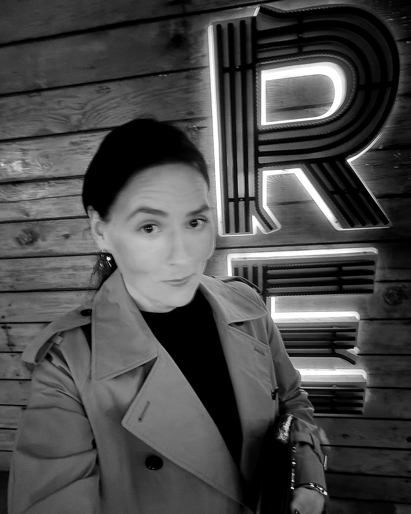

Jessica Sanders builds the commercial engines behind technology: the channels, sales structures and go-to-market systems that turn complex products into lasting growth.
Her career was forged in display technology, where she worked across every side of the table: as an operator, an integrator and a vendor. That vantage point shaped how she sees a market. Where most executives see a product to sell, Jessica sees a system to design, and the relationships, partners and service models that make it scale.
Jessica has held the seat most strategists only advise from. As Global Vice President of Channel Sales, she owned the number and the strategy behind it. She led American distribution for a display technology manufacturer, building the channel from the ground up and growing sales exponentially. She built the sales models and pipeline engines that made that growth repeatable, designed the distribution architecture, partner programs and pricing structures underneath it, and ran national campaigns that put the brand in front of the integrators, distributors and end users who decide the market. Through all of it she sold one idea: a display isn't hardware, it's a communication tool. The result was a channel that sold on value, not discount, and partners who kept coming back.
As a consultant, Jessica has developed business strategies for manufacturers, integrators and distributors on both sides of the Pacific. She has built multi-tier channel architectures, partner scorecards and tiering frameworks, and recurring revenue models that convert one-time hardware sales into multi-year service relationships. She has advised global manufacturers on turning capable factories into trusted brands and taking them into North America and beyond, and helped established players sharpen their distribution strategy against fast-moving competitors.
Her approach is built on a conviction she calls compounding: great companies don't grow by accident; every experience either strengthens the next or quietly weakens it. Her Compounding Model, six pillars that together produce one result, the customer experience, gives leadership teams a clear view of where their growth flywheel is turning and where it's slowing. She is known for finding the gaps competitors leave open and building the structure that turns them into advantage.
Jessica is a regular voice on industry podcasts and conference stages, where she has a reputation for saying the quiet parts out loud about channel strategy, recurring revenue and where the technology business is heading.
Off the clock, she calls Deep Ellum home: Dallas's historic music district, founded by Black Texans as a freedmen's town and still the city's cultural heart. You'll find her with a strong coffee, digging for vintage records, or close to the stage at a live show. She doesn't really do subtle, but she always does kind. She believes the best rooms are the ones with different voices in them, and inclusion is how she builds teams, not a slide in her deck.

Short bio
Jessica Sanders is a Dallas-based technology executive and growth strategist. A former Global Vice President of Channel Sales, she led American distribution for a display technology manufacturer, grew sales exponentially, built sales models and pipeline engines, ran national campaigns, and has consulted for manufacturers and channel partners worldwide. She builds the commercial engines behind technology: channel architecture, sales structure and recurring revenue models that turn complex products into lasting growth. Having worked as an operator, integrator and vendor, she has seen every side of the table. She is a regular podcast and conference voice, known for being direct, finding the gaps in a market and building in them.
Booking: rsvp@hausofjess.com